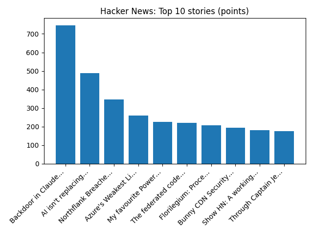

Alaska Senate candidate denies knowing about alleged plot to put two Dan Sullivans on ballot
BBC — World
YOUR DAILY INTELLIGENCE BRIEF · 2026-10-31
Global watch: Alaska Senate candidate denies knowing about alleged plot to put two Dan Sullivans on ballot, UK could see 10 days without rain after 'wettest week in two years'.
Northern Virginia: Omer “Roy” Wiles “Buster” Obituary (2026) - Fort Valley, VA - Northern Virginia Daily - Legacy | Obituary, Arlington Pizzeria Named Best in Virginia by ‘Food & Wine’ - Northern Virginia Magazine.

Global coverage includes Alaska Senate candidate denies knowing about alleged plot to put two Dan Sullivans on ballot; UK could see 10 days without rain after 'wettest week in two years'; Russia, US veto rival UN Western Sahara resolutions, leaving peacekeeping mission in limbo - Reuters. Local coverage includes Omer “Roy” Wiles “Buster” Obituary (2026) - Fort Valley, VA - Northern Virginia Daily - Legacy | Obituary; Arlington Pizzeria Named Best in Virginia by ‘Food & Wine’ - Northern Virginia Magazine.

Linda E. Carlson
Linda E. Carlson (born 10 August 1969) is a Canadian clinical psychologist.
https://en.wikipedia.org/wiki/Linda_E._Carlson
Runs so far today: 1